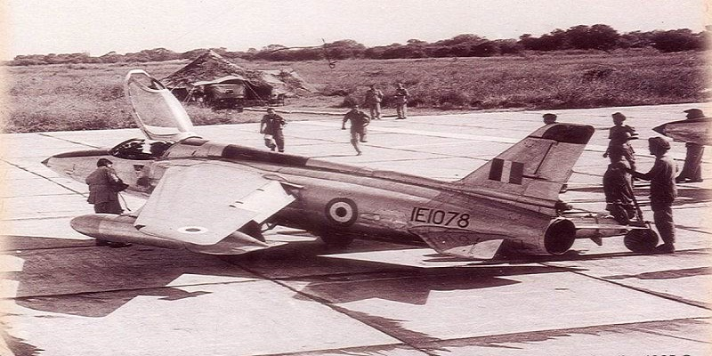
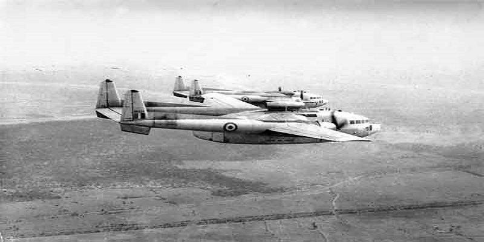
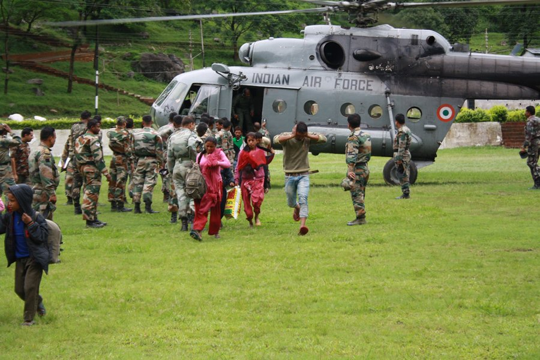

But IAF Gnats piloted by brave officers cut down Pakistani Sabres with such ferocity that the Gants came to known as ‘Sabre Slayers’.

By the time Pakistani forces surrendered, the IAF claimed that 94 PAF aircraft, including 54 F-86 Sabres had been shot down.

The rescue operation was launched by the IAF to evacuate civilians affected by the 2013 North India floods. The IAF airlifted a total of 19,600 people – flying a total of 2,140 sorties and dropping/landing a total of 3,82,400 kg of relief material and equipment